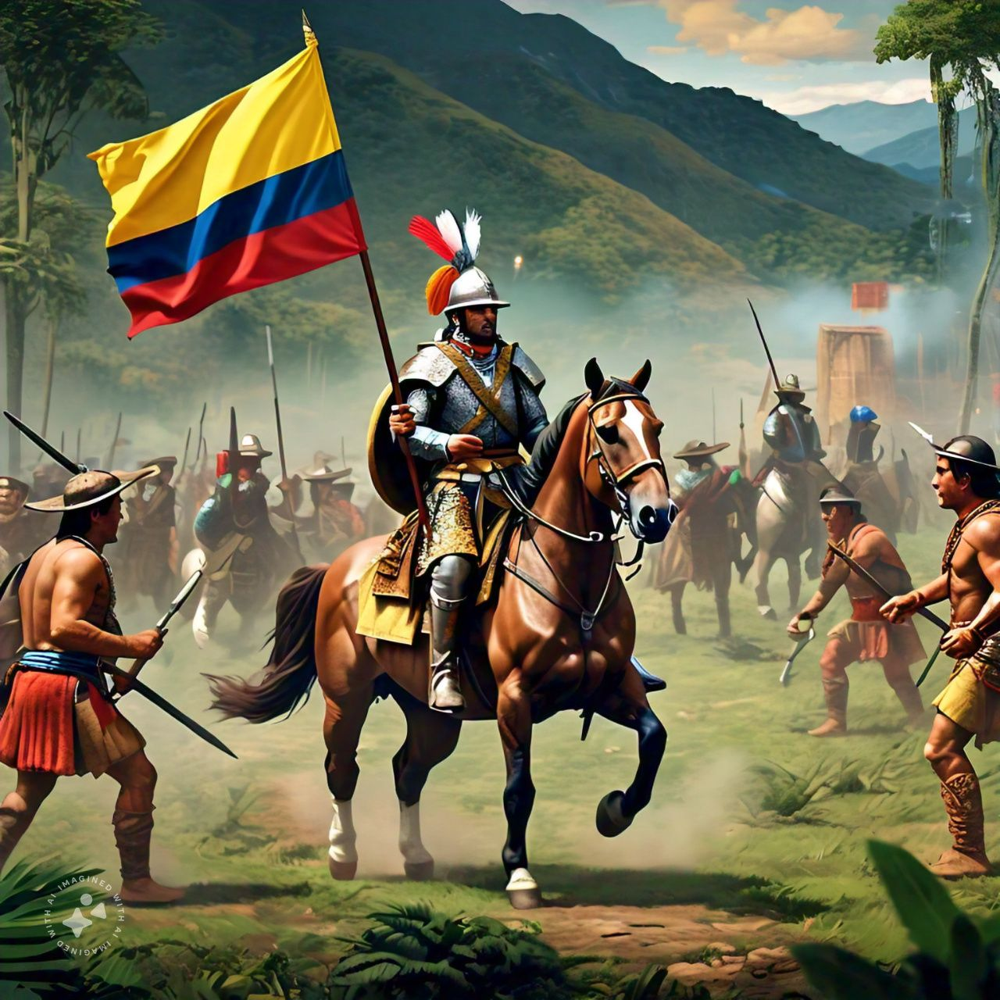

En 1538, Gonzalo Jiménez de Quesada dirigió una expedición al interior del país y fundó Santa Fe de Bogotá, la capital actual de Colombia. Esto marcó el inicio de la conquista, un tiempo difícil para los indígenas, pues los españoles les quitaron sus tierras y los obligaron a trabajar para ellos. A pesar de la valentía con la que lucharon los indígenas, los españoles lograron establecer su control sobre las tierras.
Aunque ha habido problemas, como los conflictos internos, los colombianos siempre han luchado por la paz y por mejorar su país. La historia de Colombia nos enseña que, a pesar de las dificultades, siempre es posible salir.